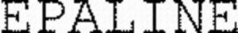

Trade Mark Journal No.2025/052 26 December 2025
WO0000001890899 (1,3,5)
Office of origin: France
Date of International Registration:19 September 2025
Date of designation in the UK:
19 September 2025

International priority date claimed: 13 May 2025
(France)
(5146940)
- Class 1
- Chemical materials and compositions for the cosmetic industry; raw materials [chemicals] for the formulation of cosmetics; chemical substances intended for use in the manufacture of scented cosmetics; Chemical compositions and materials used in the manufacture of cosmetic products; aromatics [chemical products]; chemical ingredients for synthetic perfumes; active chemical ingredients for pharmaceutical product manufacture.
- Class 3
- Cosmetics; cosmetic products; cosmetic oils; peroxide oils for cosmetic use; natural cosmetic products; soothing preparations [cosmetics]; cosmetics in the form of oils; cosmetic products for toilet purposes; cosmetic products for personal use; wipes impregnated with cosmetic products; cosmetics other than for medical use; cosmetics for body care; non-medicated toiletry preparations and cosmetic products; body oils; hair-styling oils; mineral oils [cosmetics]; plant-based essential oils; skin moisturizers; cosmetics for the skin; skin creams [cosmetics]; facial emulsions; body emulsions; skin softening emulsions; lipstick; moisturizers; hair care creams; hair care lotions; cosmetic care creams; distilled oils for beauty care; cosmetic preparations for skin care; beauty care and body cleaning preparations; hair masks; moisturizing creams; cleansing creams; fluid creams [cosmetics]; lip cosmetics; sun-tanning milks (cosmetics); self-tanning lotions [cosmetics]; color cosmetics; cosmetic eye pencils; cosmetic products for the lips; cosmetic pencils for cheeks; cosmetic powders for the face; make-up palettes containing cosmetics; cosmetic products in the nature of eye shadow; solid powder for powder compacts [cosmetics]; facial foundation; foundation cream; sun lotions; sunscreens; sunscreen [cosmetics]; sun protection preparations; sun protectors for lips; total sunblock preparations [cosmetics].
- Class 5
- Creams for pharmaceutical use; creams for medical use; creams for dermatological use; medicinal creams for the skin; moisturizing creams for pharmaceutical use; therapeutic creams for medical use; protective creams for medical use; beauty creams for medical use; night creams for medical use; acne creams; body creams for medical use; oils for pharmaceutical and medical use; peroxide oils for pharmaceutical and medical use; pharmaceutical preparations for skin care; pharmaceutical products for skin care; pharmaceutical skin lotions; medicinal tonic lotions for the skin; soothing serum for the skin [medicated]; lotions for the skin for medical use; skin pomades for medical or pharmaceutical use; Skin care oils [medicated]; medicinal creams for skin care; preparations for toning the skin for medical use; preparations for cleansing the skin for medical use; skin care lotions for medical use; oils, other than essential oils, for medical use; medicated hair lotions; medicated hair care preparations; hair stabilizing agents for medical purposes; body moisturizing milks for pharmaceutical use.
LABORATOIRES CARILENE
Representative: Madame VIDAL-LACHAUD Marion JACOBACCI CORALIS HARLE, 32 rue de l'Arcade, F-75008 Paris, FRANCE